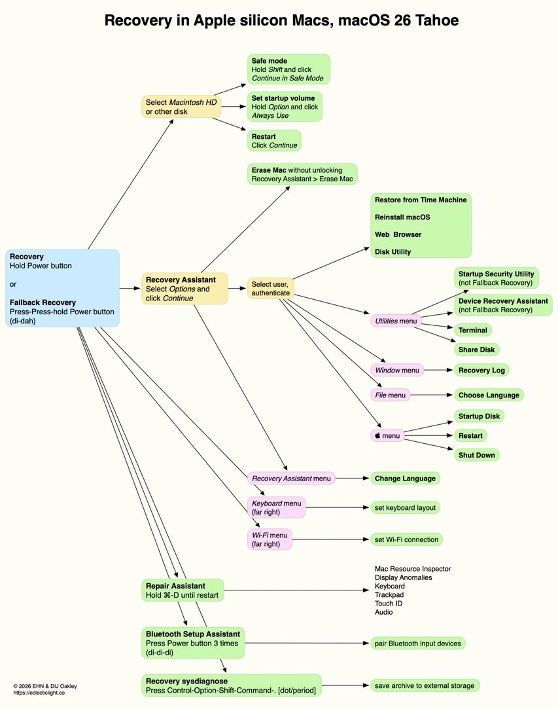

Lesson 14: System Recovery & Erasure¶
Part C: Learning Guide
Overview¶
Core Recovery Concepts¶
- 1TR (One True Recovery): On Apple Silicon Macs, the recovery environment (RecoveryOS) is completely isolated from the standard operating system and stored in a dedicated container. It is architected to be resilient — even if you completely wipe the disk, 1TR survives to enable reinstallation.
- Fallback Recovery (frOS): The backup recovery mechanism on Apple Silicon. If 1TR fails, the Mac boots a minimal fallback recovery image. Triggered by a quick double-press and hold ("di-dah") of the Power button.
- Device Recovery Assistant (DRA) [New in Tahoe]: An automated triage tool marked with a ⊕ symbol that launches automatically during boot failures to unlock FileVault and repair filesystem structures.
- DFU Mode (Device Firmware Update): Lowest-level hardware recovery mode for catastrophic failures. Requires a secondary Mac, USB-C cable, and Apple Configurator to perform Revive or Restore operations.
- EACS (Erase All Content and Settings): Fast, secure erasure via Crypto-shredding. Obliterating the Volume Encryption Key (VEK) inside the Secure Enclave renders storage instantly unreadable without zero-filling SSD flash cells.
- Activation Lock: Anti-theft mechanism tied to Apple Account via Find My. Following an erase, the Mac cannot be activated without the original account credentials or an MDM Bypass Code.
- Recovery Assistant: The initial interface encountered in Recovery. Authenticates identity against the Secure Enclave (user password) to unlock the encrypted Data volume.
- Share Disk: Replaces legacy Target Disk Mode on Apple Silicon. Enables sharing the Mac storage over physical Thunderbolt or network connections via SMB protocol.
← The boot chain leading to 1TR was covered in Lesson 13 (Boot Process) — here we focus on actions taken within the recovery interface. ← VEK and FileVault were covered in Lesson 04 (Encryption) — EACS leverages that same VEK to destroy encryption keys rather than overwriting sectors.
Terminal Commands in Recovery¶
In Recovery Mode, Terminal provides low-level diagnostic capabilities.
Disk & Filesystem Management – diskutil¶
diskutil list: Displays all physical and logical disks, including hidden partitions like 1TR.diskutil apfs list: Detailed breakdown of APFS containers, volumes, and encryption states.
Diagnostics & Passwords¶
resetpassword: Launches the graphical password reset assistant.recoverydiagnose: (New in macOS 26 Tahoe) Generates a comprehensive diagnostic bundle (logs, hardware, APFS) to external USB storage for offline analysis.
Network Verification¶
ping -c 4 8.8.8.8: Verifies external network connectivity required for Activation Lock handshakes and SSV OS downloads.
Enterprise & MDM Context¶
- Activation Lock Bypass Code: In MDM environments, a unique bypass code is escrowed in the server during enrollment. If an employee departs with a locked Mac, an IT technician enters the code in Recovery Assistant under "Activate with MDM Key" to release the device.
- MDM Remote Wipe (
EraseDevice): IT administrators can deploy a silent remote wipe command that triggers Crypto-shredding (EACS) without user intervention. - Recovery Lock (
SetRecoveryLock): An MDM-exclusive feature that sets a hardware-enforced password in the Secure Enclave blocking physical access to 1TR (the modern enterprise successor to Intel Firmware Password).
Operational Warning
EraseDevice requires an active network connection at command receipt. If a Mac is offline, the command will not execute. Additionally, if an unmanaged Mac is locked by Activation Lock without a bypass code, unlocking requires filing an AppleCare enterprise support request with original purchase invoices.
Recommended Links & Further Reading¶
- Use macOS Recovery on a Mac with Apple silicon
- Revive or restore a Mac with Apple silicon using Apple Configurator
- Activation Lock for Mac
- Manage Activation Lock with a device management service
- An illustrated guide to Recovery on Apple silicon Macs
- Recover Recovery — Deep dive on recovering RecoveryOS during boot failures
- Erase All Content and Settings does what it says
Summary Video¶
Visual Aids¶
Visual Demonstration
Images illustrating recovery and erasure mechanisms.
